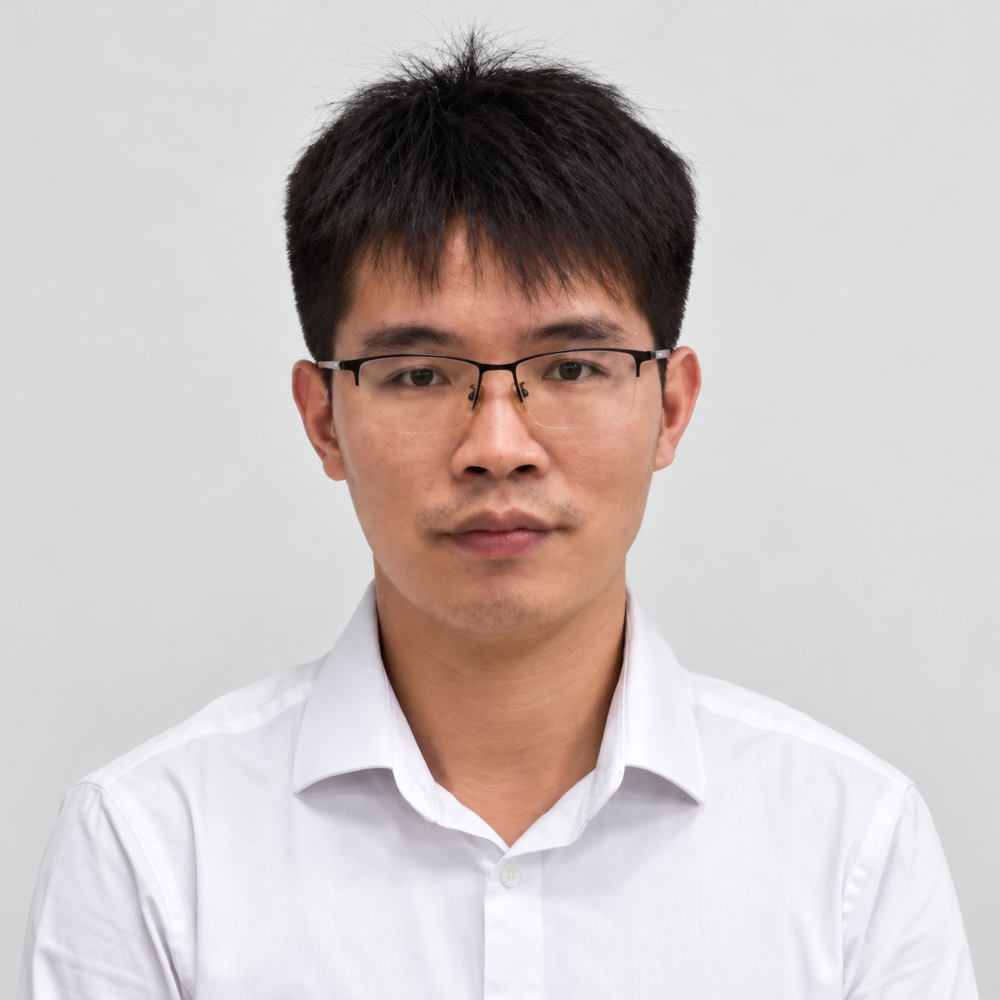

Xueliang Wen
Researcher in Marine Technology
University of Stavanger


Biography
I am Xueliang Wen, a researcher in the department of Mechanical and Structural Engineering and Materials Science, University of Stavanger. My research focuses on marine technology involving ocean-based aquaculture, floating docks, offshore wind and ship slamming.
Interests
- Ocean-based aquaculture
- Floating dock dynamics
- Offshore wind
- Water entry
Education
🎓 Ph.D. in Fluid Mechanics, 2015-2020
Beihang University